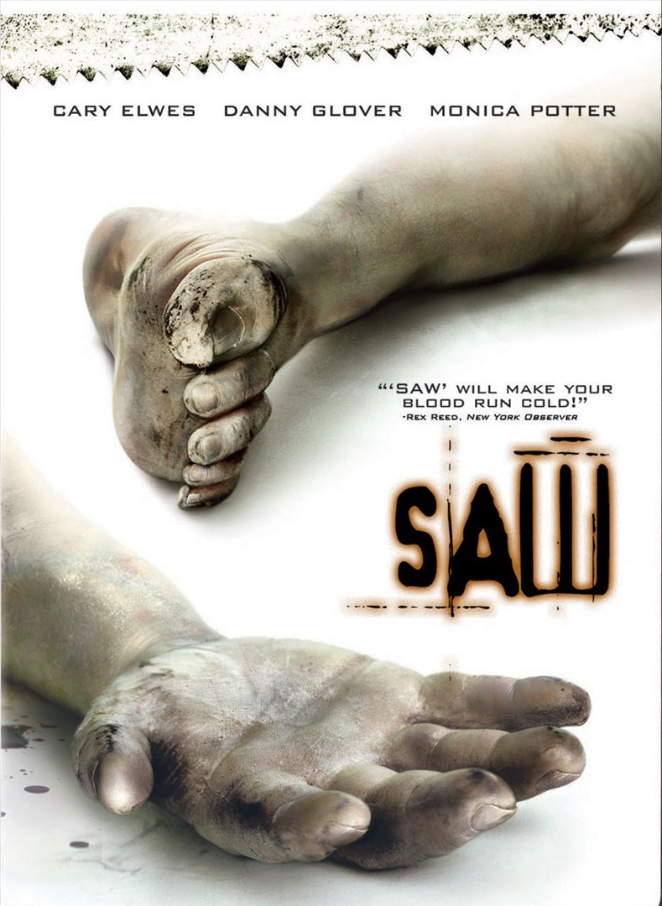

Adam y Lawrence se despiertan encadenados en un baño infecto con un cadáver entre ellos. Su secuestrador es un maníaco, cuyo juego consiste en forzar a sus cautivos a herirse a sí mismos o a otros para permanecer vivos.
Adam y Lawrence se despiertan encadenados en un baño infecto con un cadáver entre ellos. Su secuestrador es un maníaco, cuyo juego consiste en forzar a sus cautivos a herirse a sí mismos o a otros para permanecer vivos.
Un detective emprende una carrera contra el tiempo para salvar a su hijo de un demente que tiene secuestrado a varios.
La doctora Lynn Denlon (Bahar Soomekh) se convierte en una de las piezas del más reciente juego del famoso asesino (Tobin Bell). Secuestrada y trasladada a una bodega abandonada, ella descubre a Jigsaw postrado en una cama y muriendo.
Un oficial sólo tiene 90 minutos para salvar a su amigo, un comandante de SWAT, de una serie de trampas dementes.
El discípulo de Jigsaw, Joffaw Hoffman, tiene que atar cabos sueltos para proteger su secreto.
Hoffman emerge como el sucesor de Jigsaw, pero, cuando el FBI comienza a acorralarlo, pone en marcha un juego rebuscado diseñado para revelar un plan macabro.
Mientras estalla una mortal batalla a causa del legado de Jigsaw, un grupo de supervivientes busca el apoyo de Bobby Dagen, gurú de la autoayuda, un hombre con oscuros secretos que desatará una nueva oleada de terror.
Un asesino obliga a sus víctimas a participar en juegos macabros si quieren sobrevivir. La policía sospecha que sus crímenes están vinculados con el famoso asesino que murió 10 años antes, y que alguien dentro de la propia policía está implicado.
Alexander, un joven actor en una espiral descendente de autodestrucción, decide que interpretar el papel principal en su película de ficción autobiográfica es la única forma de exorcizar sus demonios.
John Kramer conoce a una persona que le promete curarle el cáncer en una clínica de la Ciudad de México. Tras descubrir que todo era una estafa, se venga de los timadores secuestrándolos y obligándolos a participar en un juego perverso.